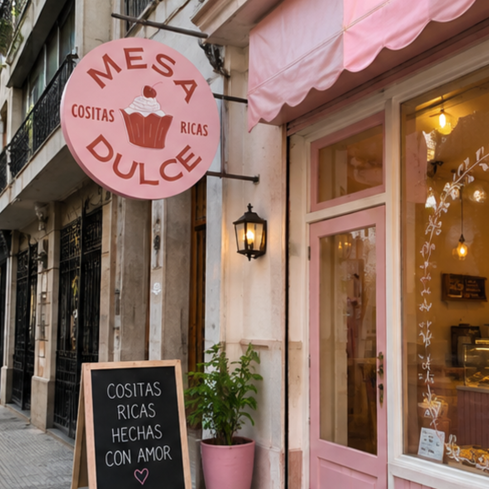

Sobre nosotros
Mesa Dulce es una pastelería dedicada a crear momentos especiales a través de sabores, aromas y preparaciones artesanales. Ofrecemos una variedad de productos de pastelería y cafetería elaborados con ingredientes seleccionados y mucha dedicación. Nuestro objetivo es brindar productos de calidad en un ambiente cálido y agradable, donde cada visita sea una experiencia para disfrutar y compartir.
